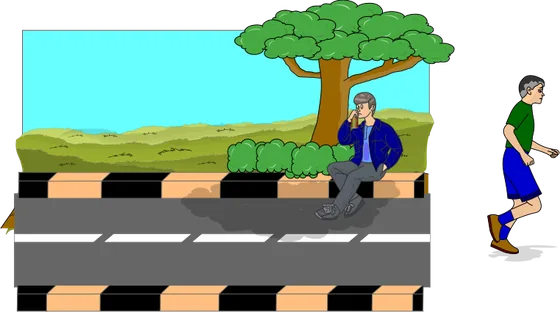
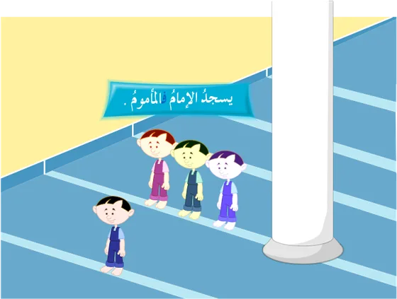
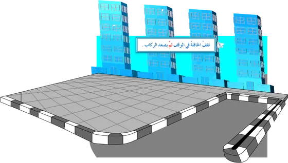
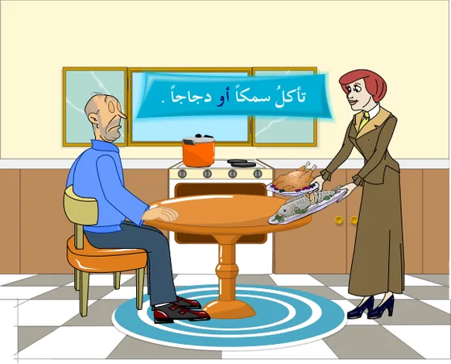
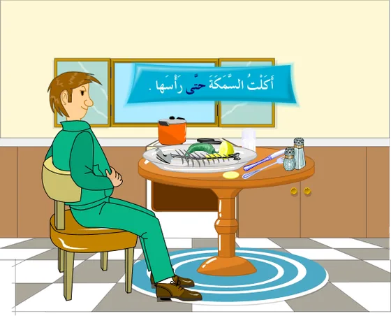
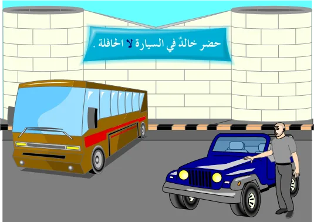
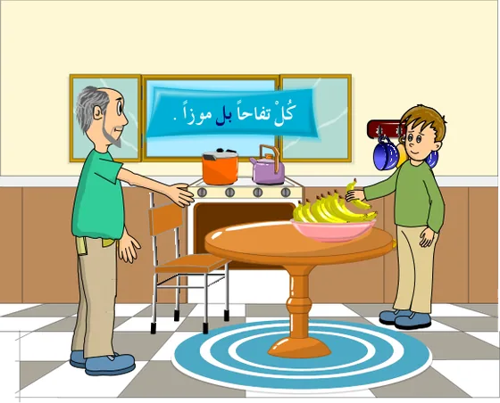

التوابع: العطف وحروفه
الدرس 4 من 5 — التراكيب
أُلاحظ
أقرأ الأمثلة وأستمع إليها، وألاحظ الكلمات الملوّنة.
- الرفع: جَاءَ خَالِدٌ وَسَعِيدٌ
- النصب: لَنْ أَشْرَبَ اللَّبَنَ وَالْحَلِيبَ
- الجزم: لَمْ أَدْرُسْ وَأَتَقَدَّمْ لِلِامْتِحَانِ.
- الجرّ: لَعِبْتُ بِالْكُرَةِ ثُمَّ الْحَبْلِ
أستنتج
حروف العطفحروفٌ تدلّ على اشتراك ما قبلها وما بعدها في شيءٍ ما. الكلمة التي تأتي بعد حرف العطف تُسمّى معطوفاً، والتي قبله تُسمّى معطوفاً عليه، والمعطوف يتبع المعطوف عليه في إعرابه.
مرفوعمنصوبمجرورمجزوماضغط على الكلمة الملوّنة لترى إعرابها، وعلى 🔊 لتستمع.
المعطوف يتبع المعطوف عليه
الرفع: جَاءَ خَالِدٌ وَسَعِيدٌ
النصب: لَنْ أَشْرَبَ اللَّبَنَ وَالْحَلِيبَ
الجزم: لَمْ أَدْرُسْ وَأَتَقَدَّمْ لِلِامْتِحَانِ.
الجرّ: لَعِبْتُ بِالْكُرَةِ ثُمَّ الْحَبْلِ
ماذا نعطف؟
اسم على اسم: جَاءَ زَيْدٌ وَعَمْرٌو.
فعل على فعل: أَكَلُوا وَشَرِبُوا.
فعل على فعل: ذَهَبَ زَيْدٌ لِيَزُورَ خَالِدًا وَيَسْتَرِيحَ عِنْدَهُ.
جملة على جملة: اللَّهُ قَادِرٌ وَالْإِنْسَانُ ضَعِيفٌ.
الحروف ومعانيها
- الواو تفيد الجمع والمشاركة.

يَتَسَابَقُ أَحْمَدُ وَأَيْمَنُ فِي الْعَدْوِ. - الفاء تفيد المشاركة مع الترتيب والتعقيب.

يَسْجُدُ الْإِمَامُ فَالْمَأْمُومُ. - ثُمَّ تفيد المشاركة مع الترتيب والتراخي.

تَقِفُ الْحَافِلَةُ فِي الْمَوْقِفِ ثُمَّ يَصْعَدُ الرُّكَّابُ. - أو تفيد التخيير.

تَأْكُلُ سَمَكًا أَوْ دَجَاجًا. - حتّى تفيد الغاية.

أَكَلْتُ السَّمَكَةَ حَتَّى رَأْسَهَا. - أم تفيد التعيين أو التسوية.التعيين: مَنِ الَّذِي أَجْرَى تَجْرِبَتَهُ، أَزِيَادٌ أَمْ عِمَادٌ؟التسوية: سَأُعَاقِبُ زَيْدًا، أَحَضَرَ أَمْ لَمْ يَحْضُرْ.
- لا تفيد إثبات الحكم لما قبلها ونفيه عمّا بعدها.

حَضَرَ خَالِدٌ فِي السَّيَّارَةِ لَا الْحَافِلَةِ. - بل تفيد الإضراب، أي إثبات الحكم لما بعدها ونفيه عمّا قبلها.

كُلْ تُفَّاحًا بَلْ مَوْزًا.
أُطبّق
1حرف العطف الذي يفيد الترتيب مع التراخي:
2ماذا تفيد «أو» في: «اِقْرَأْ قِصَّةً أَوْ مَجَلَّةً»؟
3اختر الصحيح: «رأيتُ القطَّ و…»
4اختر الصحيح: «مَرَرْتُ بِالْحَدِيقَةِ وَ…»
5ماذا تفيد «لا» في: «يَفُوزُ الصَّادِقُ لَا الْكَاذِبُ»؟
6ماذا تفيد «أم» في: «أَشَايًا تُرِيدُ أَمْ حَلِيبًا؟»
7ما إعراب «سعيدٌ» في: «جَاءَ خَالِدٌ وَسَعِيدٌ»؟
8ما إعراب «الحليبَ» في: «لَنْ أَشْرَبَ اللَّبَنَ وَالْحَلِيبَ»؟
إجابات صحيحة من أول محاولة:
أتمرّن أكثر
أستمع، ثمّ أرتّب الكلمات لأكوّن الجملة:
أستمع، ثمّ أكتب ما أسمع:
✓ أنهيتَ هذا الدرس
دروس العربية — للاستعمال التعليمي.